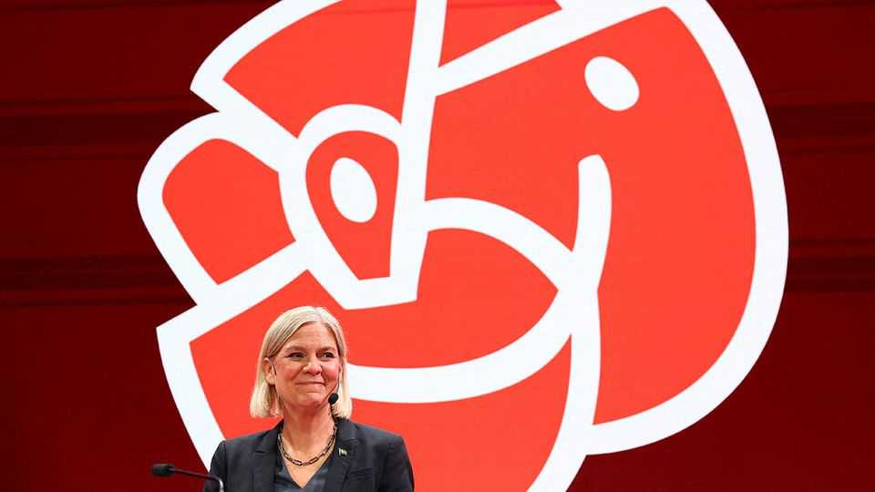
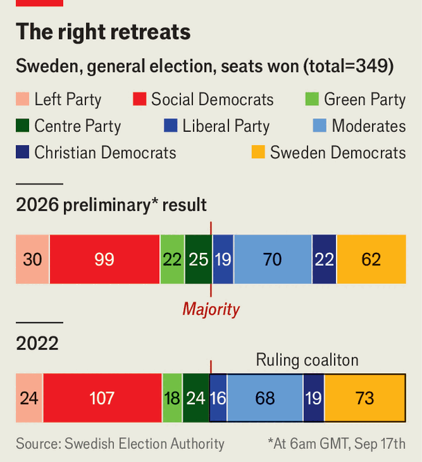
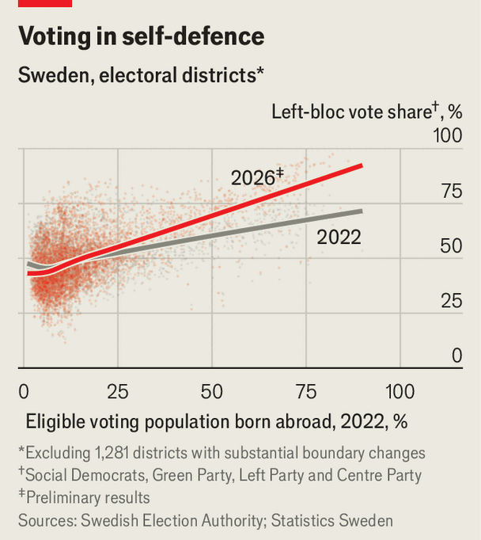

Sweden’s left seems to have eked out a narrow victory
A modest loss for the hard-right Sweden Democrats

Sep 17th 2026
SWEDISH ELECTIONS are often nail-bitingly close. The vote on September 13th was no exception. For much of election night, the government looked like it might cling to power. But as the votes were counted, the left-wing opposition’s narrow lead (with 176 seats against the right’s 173) firmed up. Magdalena Andersson, the Social Democrats’ leader, looks likely to take power—albeit atop a wobbly, divided bloc.

The vote is a blow to Ulf Kristersson, the centre-right prime minister, but not in the way most predicted. For much of the year, opinion polls suggested that liberal voters would punish Mr Kristersson’s government for co-operating with the Sweden Democrats (SD), a populist party that was once shunned by mainstream conservatives because of its neo-Nazi roots. Together they implemented some of the toughest migration policies in Europe.
But in the end Mr Kristersson’s Moderate Party held firm, while the SD stumbled. The party’s vote share dropped by three percentage points, falling below that of the Moderates. The SD, which had increased its vote share at every election since entering parliament in 2010, once prided itself on its insurgent energy. It is a rare setback for the populist-right party, whose allies elsewhere in Europe are mostly on the rise.
Jimmie Akesson, the SD’s leader, tried to reassure voters with a sensible, down-to-earth image. His campaign videos harped on nostalgia and his promise to “Make Sweden Sweden again”. His final rally in Stockholm on September 12th was more like a music festival than the tense, angry demonstrations of the party’s past. To close it out, a woman in a pink balaclava and yellow skirt bopped around onstage, singing “Gimme, gimme some love for Jimmie!” while pyrotechnics lit up the square.
But the SD’s messaging also had a nastier streak. Having brought immigration sharply down, it campaigned on making Sweden inhospitable to migrants already living there. Its policies included banning headscarves and expanding a repatriation grant to immigrants who have already become citizens. “Do you miss Mogadishu? The repatriation grant will help you get home,” read one of their ads. In a final stunt Mr Akesson cast his ballot in Rinkeby, an immigrant neighbourhood in northern Stockholm. “Sweden shouldn’t look like this,” he said at the polling station.
Such efforts to gin up the SD’s hardline supporters seem to have failed. “The politics of migration are much tougher than Swedes’ views of immigrants,” says Torbjorn Sjostrom of Novus, a pollster. He points out that 52% oppose revoking permanent residency from migrants, one of the SD’s main proposals. Turnout in areas like Rinkeby was strong: one activist says voters were queuing at the polls before they opened. “They’re afraid this government will send them away,” says Pyry Niemi, a former Social Democratic MP canvassing in Tensta, a little farther north.
Few such voters, however, plumped for the Social Democrats. Not even the intervention of Benny Andersson—an ABBA star who on election day performed a rendition of “Mamma Mia” (“Magdalena, here we go again!”)—gave the party a boost. The Social Democrats’ vote share was its lowest in more than a century, at 28%. Small parties surged, including the Greens and the Left, a formerly communist party.

That could make Ms Andersson’s side hard to manage. As well as environmentalists and leftists, her bloc includes the Centre Party (the only conservative party that refuses to work with the SD), which has ruled out a formal coalition with the Left. Ms Andersson, who was briefly prime minister in 2021-22, will probably have to form a minority government. The parties are “a very disparate bunch”, says Anders Widfeldt of Aberdeen University. “There isn’t really a very credible government there.”
If the coalition is ineffective, it could prove an easy target for populist potshots. The SD is already trying to undermine the left bloc’s victory. One of the party’s MPs suggested that Ms Andersson’s side only won because of immigrant voters who were granted citizenship during the past few years. The SD, which was offered cabinet seats if Mr Kristersson won, has attained mainstream acceptance that was once unthinkable. Ms Andersson may still struggle to keep it at bay. ■